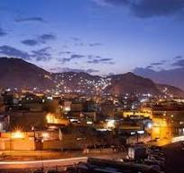
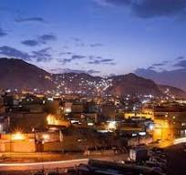

BALOCHISTAN
Balochistan is the very beautyfull Province of Pakistan
Let,s See View of Balochistan

 


History of Balochistan
A Glimpse into the Rich History of Balochistan Balochistan, a region straddling the modern-day borders of Iran, pakistan, and Afghanistan, boasts a vibrant and diverse history. Ancient Civilization and the Indus Valley The roots of Balochistan’s history can be traced back to ancient times when the region was home to various civilizations. Archaeological evidence suggests that the Indus Valley Civilization, one of the world’s oldest urban civilizations, had a significant presence in parts of Balochistan. Arrival of the Indo-Aryans and Persian Influence The arrival of the Indo-Aryans marked a new chapter in Balochistan’s history. They brought with them their language and culture, influencing the region’s social fabric. Later, Persian influence from the Achaemenid and Sassanian empires played a crucial role in shaping the region’s political and cultural landscape. The Rise of the Baloch Tribes Balochistan derives its name from the Baloch tribes, who gradually migrated and settled in the region from the 5th century onwards. These nomadic tribes established a distinct identity and began to exert their influence, shaping the future trajectory of Balochistan’s history. Islamic Conquest and Baloch Dynasties With the advent of Islam in the 7th century, Balochistan became a part of the Islamic Caliphate. Several Baloch dynasties emerged during this period, including the Hotakis, the Gichkis, and the Rind and Lashari tribes. They ruled over different parts of Balochistan, leaving their mark on the region’s history. The Colonial Era and British Influence The 19th century saw the arrival of the British in the Indian subcontinent, including Balochistan. The British gradually extended their control over the region, leading to the formation of the British Balochistan Agency. British influence left a lasting impact on the region’s administrative, social, and economic structures. Balochistan and the Partition of India The partition of India in 1947 had significant implications for Balochistan. The region was divided between Pakistan and Iran, leading to the emergence of modern-day Pakistani and Iranian Balochistan. This division continues to shape the political dynamics of the region to this day. Modern days Balochistan Baloch and Pashtoons are two prominent ethnic groups residing in Balochistan, contributing to the region’s diverse cultural tapestry. The Baloch, known for their rich history and distinct language, have inhabited the region for centuries. They have a strong sense of identity and have played a significant role in shaping Balochistan’s political landscape. On the other hand, the Pashtoons, also known as Pathans, have a sizable population in Balochistan, particularly in the northern parts. They bring their unique traditions, language, and customs, adding to the multicultural fabric of Balochistan. Both communities coexist and contribute to the social and economic development of the region.